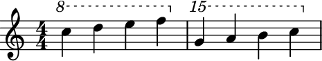
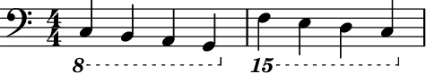

NumericOttava¶
-
class
auxjad.NumericOttava(n: int = None, *, format_slot: str = None)¶ LilyPond’s
\ottavacommand tweaked to output numeric ottavation (e.g."8"instead of"8va"or"8vb","15"instead of"15va"or"15vb", etc).- Basic usage:
Usage is similar to
abjad.Ottava:>>> staff = abjad.Staff( ... r"c'''4 d'''4 e'''4 f'''4 g'''4 a'''4 b'''4 c''''4" ... ) >>> ottava = auxjad.NumericOttava(1) >>> abjad.attach(ottava, staff[0]) >>> ottava = auxjad.NumericOttava(2) >>> abjad.attach(ottava, staff[4]) >>> ottava = auxjad.NumericOttava(0, format_slot='after') >>> abjad.attach(ottava, staff[-1]) >>> abjad.f(staff) \new Staff { \ottava 1 \set Staff.ottavation = "8" c'''4 d'''4 e'''4 f'''4 \ottava 2 \set Staff.ottavation = "15" g'''4 a'''4 b'''4 c''''4 \ottava 0 }
Numeric ottavation is also used for ottava bassa:
>>> staff = abjad.Staff( ... r"\clef bass c,4 b,,4 a,,4 g,,4 f,,4 e,,4 d,,4 c,,4" ... ) >>> ottava = auxjad.NumericOttava(-1) >>> abjad.attach(ottava, staff[0]) >>> ottava = auxjad.NumericOttava(-2) >>> abjad.attach(ottava, staff[4]) >>> ottava = auxjad.NumericOttava(0, format_slot='after') >>> abjad.attach(ottava, staff[-1]) >>> abjad.f(staff) \new Staff { \ottava -1 \set Staff.ottavation = "8" \clef "bass" c,4 b,,4 a,,4 g,,4 \ottava -2 \set Staff.ottavation = "15" f,,4 e,,4 d,,4 c,,4 \ottava 0 }

Methods
__init__([n, format_slot])Initialize self.
__repr__()Delegates to storage format manager.
Attributes
Gets format slot.
Gets octave change.
Is true.
-
__init__(n: int = None, *, format_slot: str = None) → None¶ Initialize self. See help(type(self)) for accurate signature.
-
property
format_slot¶ Gets format slot.
Format slot defaults to before:
>>> staff = abjad.Staff("c'4 d' e' f'") >>> ottava = abjad.Ottava(n=1) >>> abjad.attach(ottava, staff[0]) >>> ottava = abjad.Ottava(n=0) >>> abjad.attach(ottava, staff[-1]) >>> abjad.show(staff)
Set format slot to after like this:
>>> staff = abjad.Staff("c'4 d' e' f'") >>> ottava = abjad.Ottava(n=1) >>> abjad.attach(ottava, staff[0]) >>> ottava = abjad.Ottava(n=0, format_slot='after') >>> abjad.attach(ottava, staff[-1]) >>> abjad.show(staff)
-
property
n¶ Gets octave change.
-
property
persistent¶ Is true.
>>> abjad.Ottava().persistent True
Class constant.